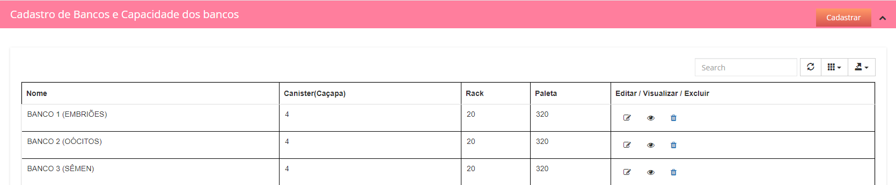
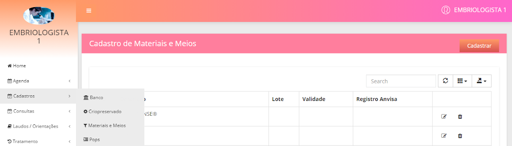

Cadastros de Banco
Botão Banco - É neste botão que o embriologista irá cadastrar todos os bancos de criopreservação de seu laboratório, inicialmente é trabalhoso,
porém fazendo o cadastro completo e de forma correta você terá total controle dos espaços vazios e cheios de seus bancos.
Para cadastrar um banco, basta clicar no botão cadastrar, escrever o nome do banco, a quantidade de canisters e salvar. Após clicar em salvar,
de acordo com a quantidade de canisters que você escreveu, irá abrir a área de cadastro das racks, você deverá colocar quantas racks existem em cada canister clicando em
salvar uma por uma, após salvar irá abrir a área de cadastro das palhetas, você deverá cadastrar todas as palhetas existentes em cada rack. Após todo o cadastro, quando você for
realizar algum congelamento dentro do prontuário da paciente o próprio sistema já irá trazer para você os espaços vagos. E sempre que for descongelada uma palheta o próprio
sistema dará baixa no banco correspondente. Sempre quando necessário você poderá incluir um novo banco, uma nova rack e novas palhetas, assim como editar o que já está cadastrado.
Cadastro de Materiais e Meios
Botão Materiais e Meios - É neste botão que o embriologista deverá cadastrar todos os materiais e meios que ele utiliza em seu laboratório. Pois eles apareceram sempre ao
final dos prontuários para que você selecione aquilo que foi utilizado em cada paciente. Sempre que um material ou meio estiver fora do prazo de validade você será alertado.
Para cadastrar basta clicar no botão cadastrar, digitar as informações e salvar. Sempre que necessário as informações poderão ser editadas e o material ou meio excluídos, para isso basta clicar nos ícones correspondentes a frente de cada cadastro.
Cadastro de POPs
Botão Pop`s - É neste botão que o embriologista irá realizar o cadastro de seus pop’s (Procedimento Operacional Padrão).
Para realizar o cadastro, basta clicar no botão cadastrar que um ambiente similar a um editor de texto irá abrir, adicione um título crie seu documento e não se esquece de colocar as datas de criação e de revisão que são exigidas pelo órgão fiscalizador.
Obs: Se você já tiver os pops digitados em seu computador, basta copiar e colar para dentro do sistema. Coloque o título, copie e cole o corpo do documento na área de edição de texto, coloque as datas de criação e revisão e clique em salvar.
Voltar ao menu do Embriologista